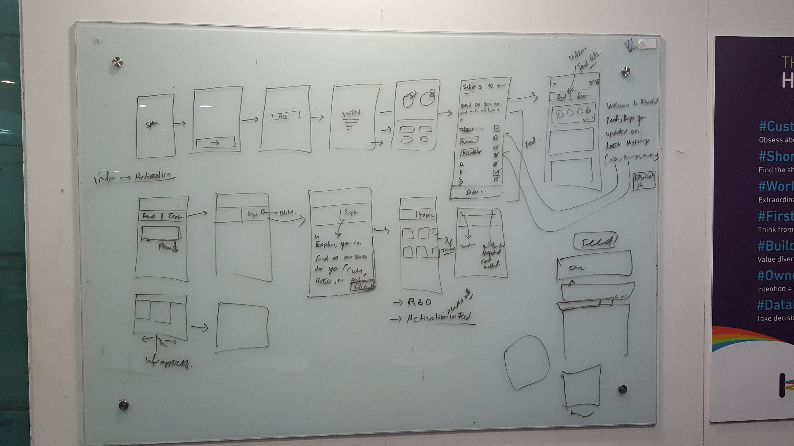
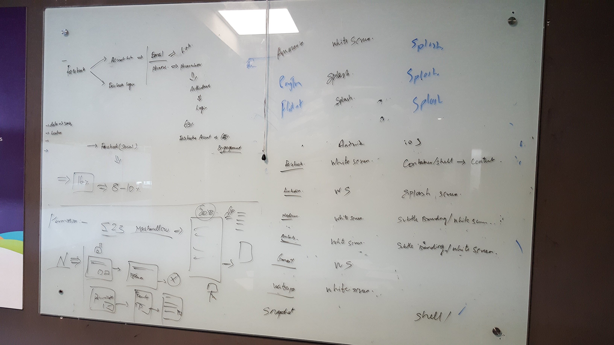
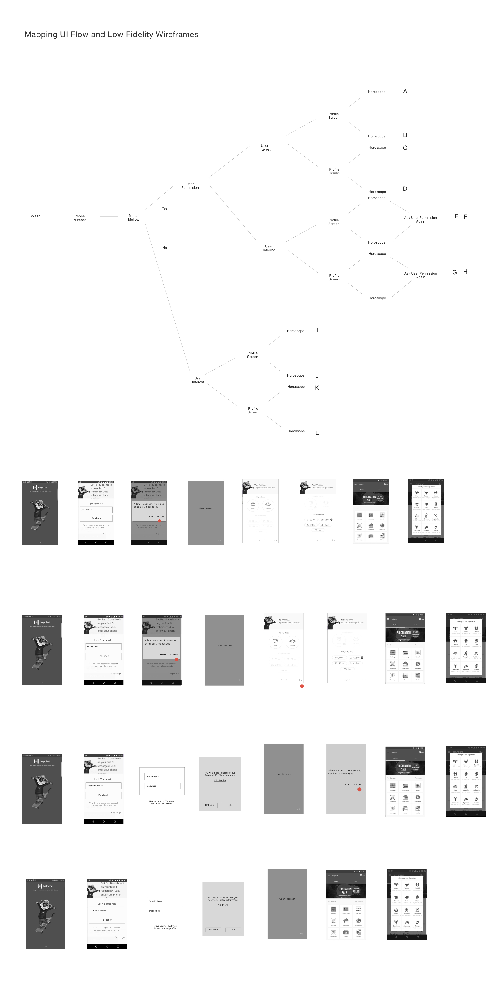
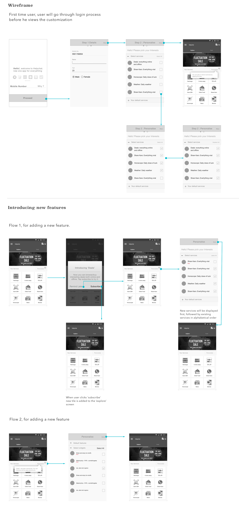

Helpchat Solving for 'User Onboarding'
Redesigning the onboarding experience of the Android App
Duration:
2 months
Type:
Corporate Work
Roles and Responsibilities:
Design Strategy, UX Design, Project Management
The Problem
Helpchat is an all in one app with multi services such as cabs, recharge, food, deals, bill payments, news etc. Currently, there was 18% drop off in the onboarding funnel (post download to using the app for the first time). We wanted to decrease in the number by half by integrating social login and giving the ability to for the users to use the app without login. The hypothesis was that, with this feature users will be able to understand and appreciate the app better because social login reduces the pain of creating logins and “skip login” feature helps user use the app even before logging-in.
The Solution
Me and My team was focussed on redesigning the entire onboarding experience to make sure we bring the funnel drop-off by half.
My Role
I was the leading the entire design effort for this project. Right from research to user testing was carried out at a breakneck speed. We were running on a very tight deadline so I was also responsible for managing the entire effort. I implemented design sprints were we used to spend a week for design, development and user testing. The following week we used to take our learning and implement on the next sprint. In Order to make sure everyone in the team is informed, I used to moderate the sessions on the daily stand up to communicate all design decisions and next steps.
Design Process
Step 1: Understand the Problem:
Designing for emerging markets have always been very challenging because there is an entire bunch that skipped laptops and landed in mobile first. Now we had to really understand them because there was no natural progression in technology. So first few days I spent in understanding the competitive space and user’s mind set with logins.
• Users were comfortable with social logins
• Among all other logins facebook was the most preferred one.
• Unanimous thumbs up for letting user use the app without login.
Based on our user testing and knowledge we acquired I clustered all findings and tried to make sense of it by grouping them. Post that I defined the the primary problem that we would be tackling which was solving for login by communicating the apps philosophy and making sure users select the right services.
Making Sense
We started off with clustering the communication-based issues faced by buyers from data received through the call center and narrowed down to the critical use-cases of the product.

Understanding use cases and defining goals
Analysing the use cases helped us define the key goals that we wanted to achieve.

Design Goals
- Communicate the USP of the app
- Ability to select services that the user wants
- Quick and easy
Low-Fi Exploration
Once I was clear on the problems that I was solving. I tried to generate as many concepts as possible in the low fidelity wireframing stage. I also made sure every design is analysed based on pros and cons including solving for multiple screen sizes.

Mid-Fi Iterations
Once we finalised on few options I worked on the data flows, key tasks and auditing the content in the screens. I tried to define a basic structure before moving to visual design. I experimented with different layouts and structures before finalised the variants. There were some design option which we could not take a call on so we marked them to be user tested before the final design.
Final Wireframes
AWe had around 3 designs that was shortlisted for user testing. In order to make sure the tests are not biased. I made sure to go on the ground to get the testing done. I primarily targeted users under 20 to 25 in colleges and universities to get the testing done. I measured the success of design on the way they completed the tasks, shadowing and conducting user interviews. I used invision prototypes and screen recorders to document the entire process.

Visual Design
After a final sign off on the design from the team and engineering, I worked with a fellow designer on the Visual Design of the product taking into consideration helpchat's new visual language guidelines.
Prototyping & Testing
We had around 3 designs that was shortlisted for user testing. In order to make sure the tests are not biased. I made sure to go on the ground to get the testing done. I primarily targeted users under 20 to 25 in colleges and universities to get the testing done. I measured the success of design on the way they completed the tasks, shadowing and conducting user interviews. I used invision prototypes and screen recorders to document the entire process.